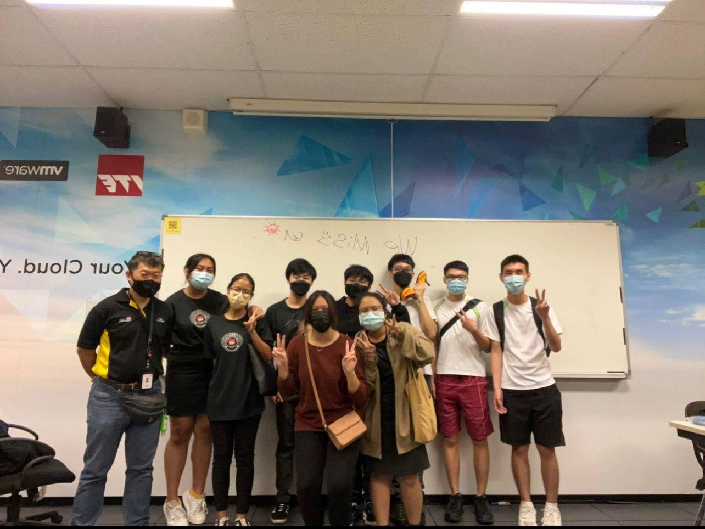
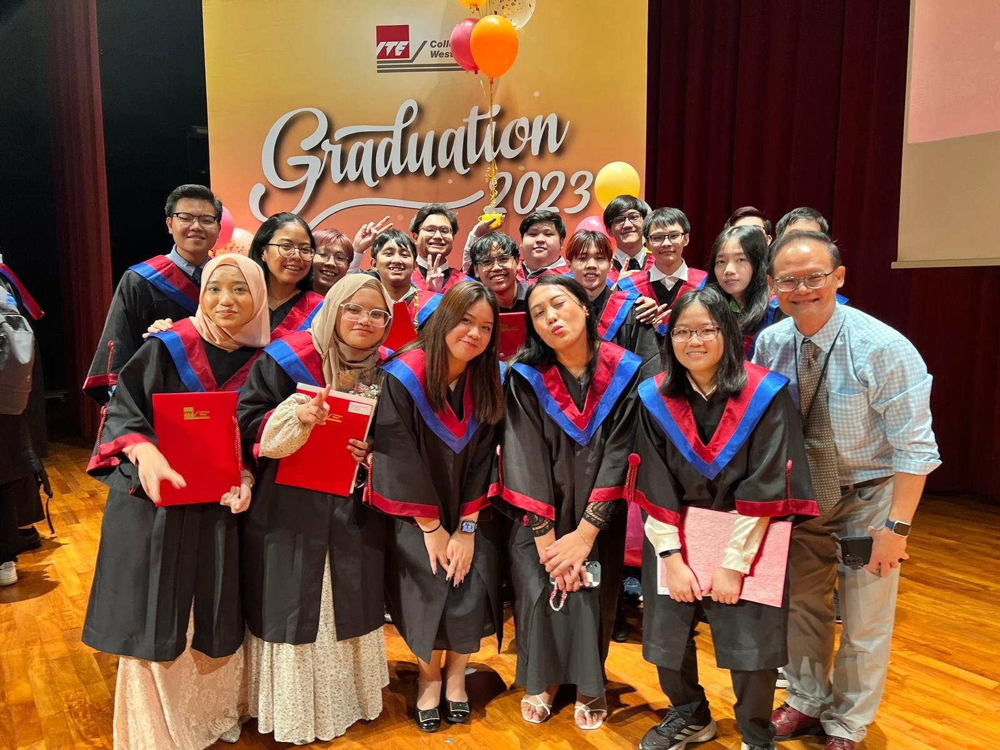
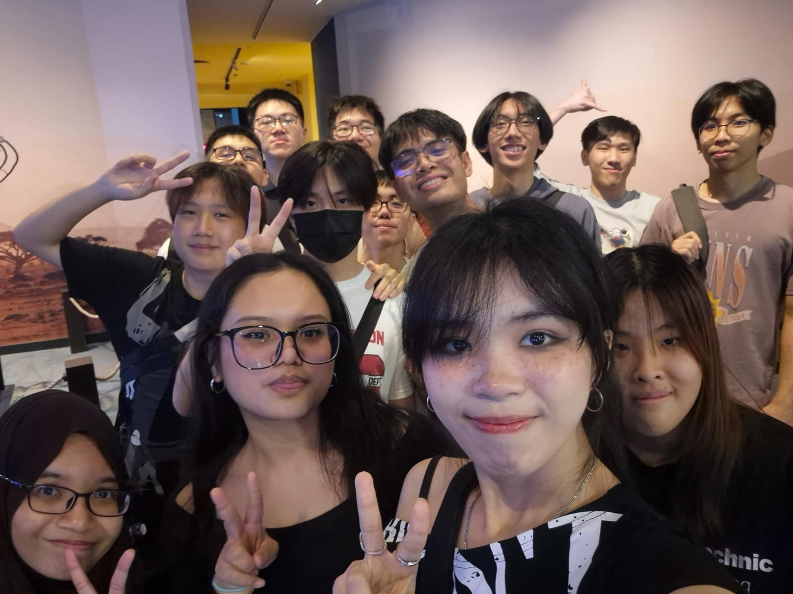
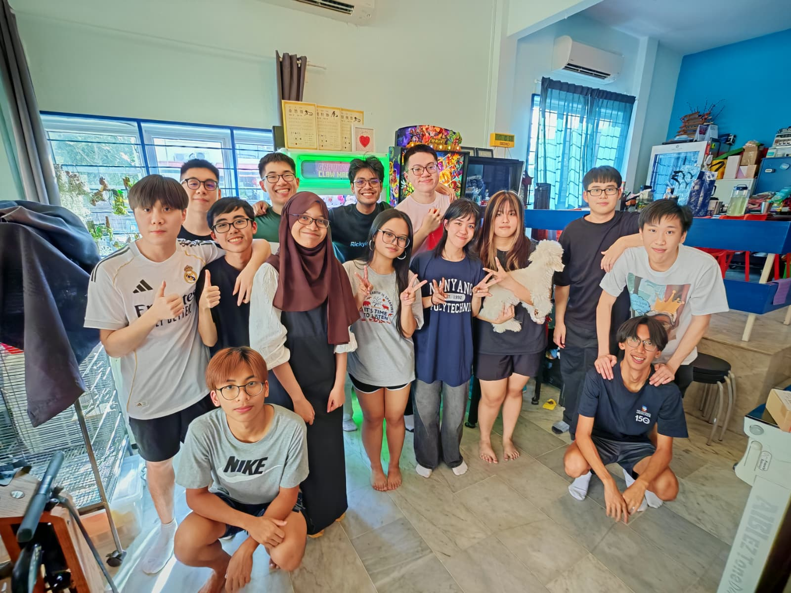
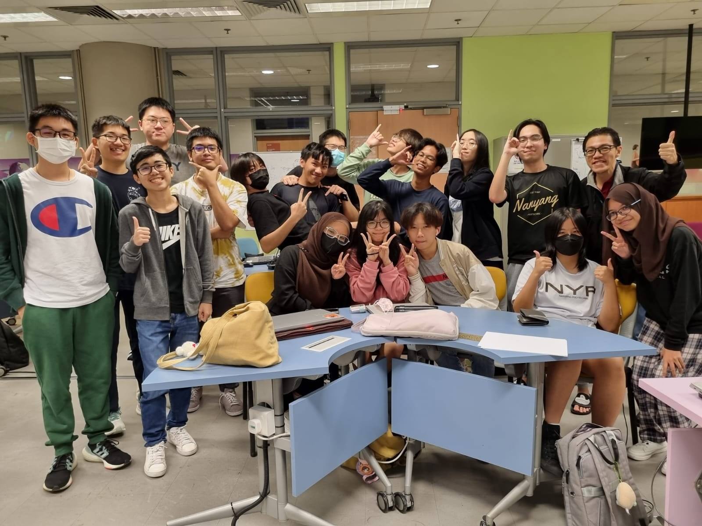
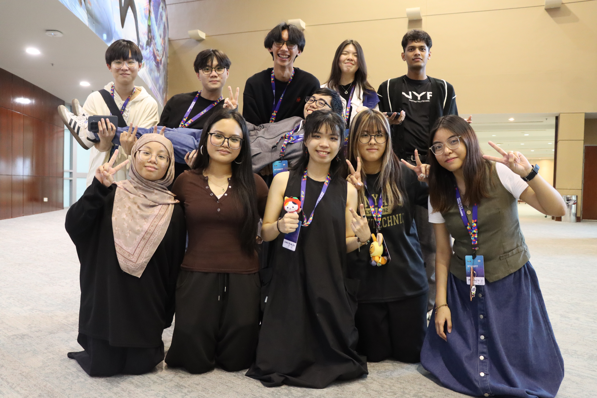

I'm an Information Technology graduate from Nanyang Polytechnic with a specialisation in Cloud Infrastructure & Services.
I enjoy exploring how technology, business, and people can come together to create meaningful solutions.
Through projects, internships, volunteering, and continuous learning, I hope to create technology that makes a positive impact.
Education
My academic journey and learning experiences.
Click any photo below to view it closer.
Diploma in Infocomm & Media Engineering
Nanyang Polytechnic
Specializing in Cloud Infrastructure & Services, with learning experience in cloud computing, networking, virtualization, and system infrastructure.
Higher Nitec in Cyber & Network Security
Institute of Technical Education
Built a foundation in cybersecurity and networking. Served as Publication Manager of the ITE College West Student Council Club and received multiple academic and leadership awards.




To make the most of my tertiary education experience, I joined the Student Council Club at ITE College West and served as the Publication Manager. I played an active role in connecting students and promoting a vibrant campus community.
- Organized and promoted campus events
Collaborated with fellow councillors to plan and execute engaging events for students. - Created & Designed Marketing Materials
Designed publicity materials and managed communications across multiple platforms. - Engaged the Community
Strengthened student engagement by sharing updates and highlighting club activities.
Through my experience in the Student Council Club, I developed stronger leadership, communication, and teamwork skills while learning how to engage different groups of students and coordinate activities effectively.
Recognized for demonstrating good character,leadership and service.
2023
Recognized for attaining good results and demonstrating exemplary skills in non-academic activities.
2023
Recognized for showing improvement in academic performance and demonstrating good conduct.
2023
Recognized for demonstrating exemplary leadership qualities, service and contributions.
2023
I organised outings and gatherings, creating opportunities for us to bond and support each other throughout our academic journey. Other than that, I had opportunities to showcase my school projects in showcases.
Organised Outings & Gatherings
Planned class activities that strengthened friendships beyond the classroom.
Fostered Class Community
Build a supportive and inclusive environment for classmates to connect and collaborate.
Showcased Our Achievements
Presented our projects and accomplishments in school showcases, supporting each other and celebrating our hard work.




Professional Work Experience
My professional experience and contributions.
Systems Engineer (Internship)
Sancro Pte. Ltd.
Assisted in enterprise IT operations, including Cisco ISE authentication, Active Directory configuration, laptop deployment, troubleshooting, and data centre infrastructure audits.
Salesperson (Internship)
Dynacore Technologies Pte. Ltd.
Assisted customers with IT product recommendations, custom PC quotations, and technical enquiries while developing communication and sales skills.
Part-time Sales Associate
Cotton On Asia Pte. Ltd.
Provide customer service, assisted with inventory management, and contributed to maintaining a positive shopping environment.
Projects
Showcasing my hands-on projects and achievements.
Click any project image to enlarge it.

AWS Cloud Infrastructure Deployment
Tools used: AWS EC2, VPC, EBS, Amazon Linux
Deployed an AWS cloud environment using AWS Services, creating an EC2 instance to run a PHP webserver and host a live webpage.
Deployed an AWS cloud environment using AWS Services, creating an EC2 instance to run a PHP webserver and host a live webpage.

Analyzed malware incidents using PCAP files to identify vulnerabilities causing network issues. Conducted penetration tests on Metasploitable systems. Proposed Mitigation strategies to enhance security, including antivirus deployment.

Hardened an Ubuntu Linux virtual machine by implementing five security measures: Logwatch, firewalld, Snort, SSHGuard and SELinux.

Created an Entity-Relationship (ER) diagram for a retail sales database, covering products, customers, orders and suppliers. Used SQL to create tables, define relationships and perform data analysis.

Developed a responsive website for Restaurant reservations using HTML, PHP, CSS, JavaScript, jQuery, MySQL. Integrated a database to manage reservations efficiently.
Volunteering
My community involvement and volunteer work.
Click any photo below to view it closer.


After graduating from Nanyang Polytechnic, I wanted expand my horizons about community involvement and giving back to society. I have been actively volunteering at a nearby primary school, where I get to befriend with lower primary school students and encourage the joy of reading by reading storybooks to them. This experience has been incredibly rewarding, as it allows me to make a positive impact on the lives of young children and contribute to their love for learning.